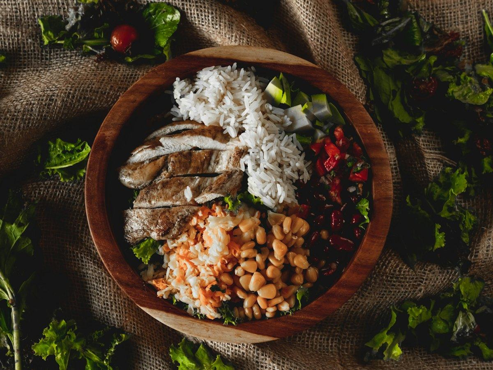
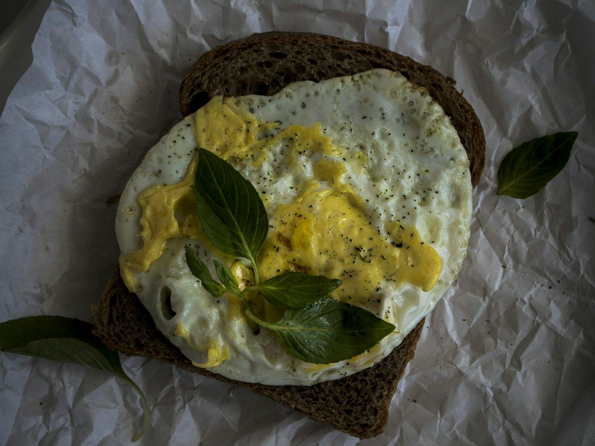
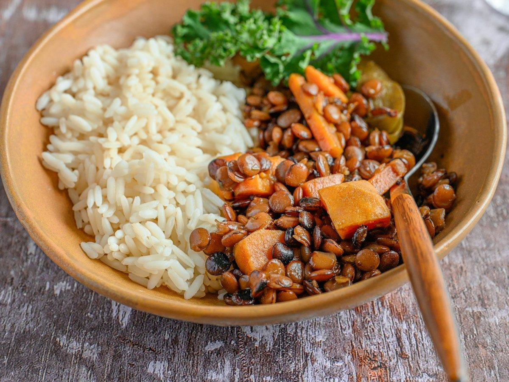
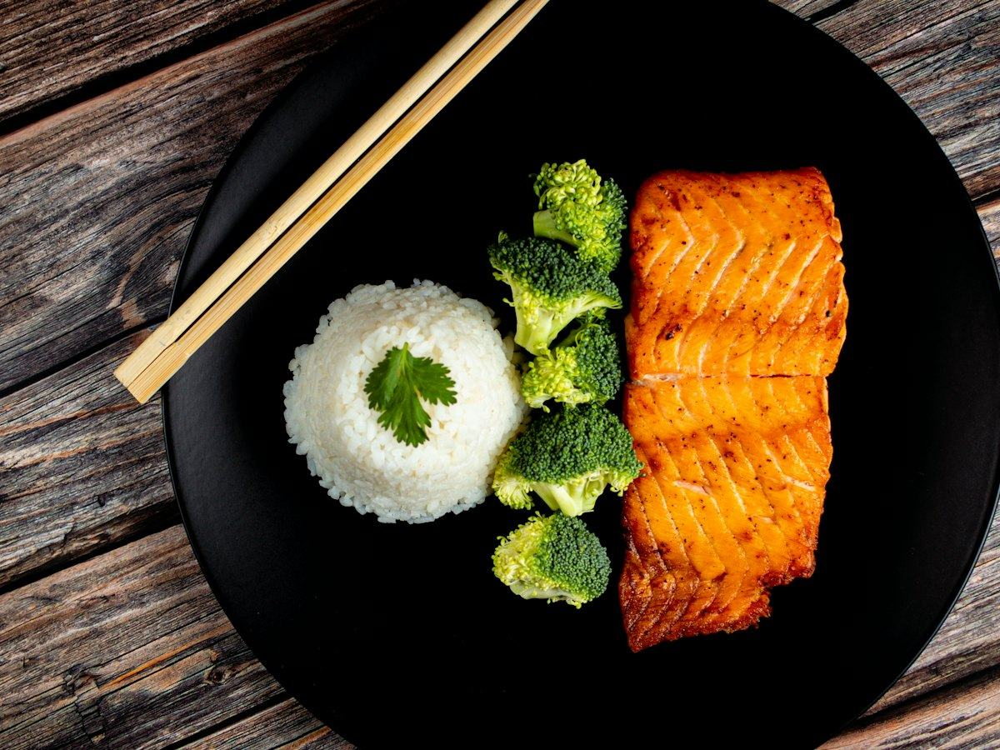
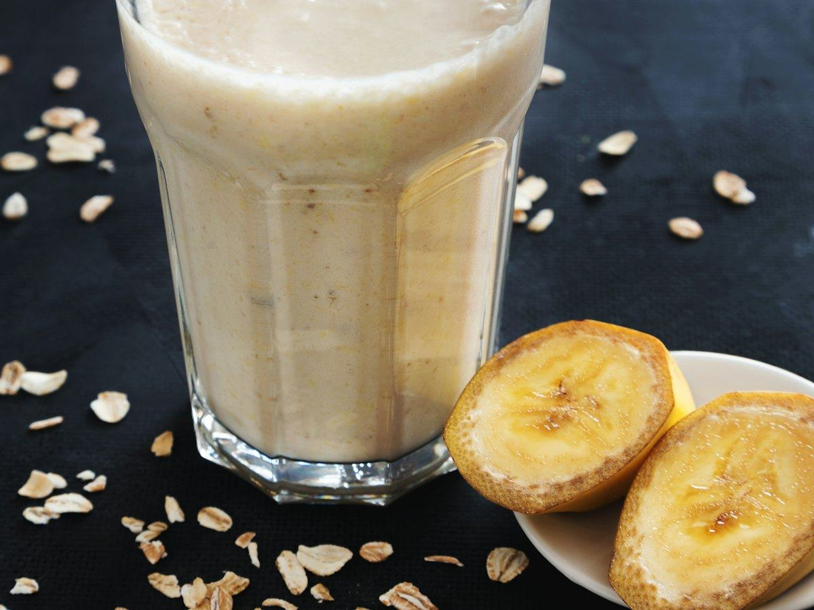

Recetas
3 recetas de salmón fáciles y saludables: al horno, en papillote y en ensalada
Salmón al horno con espárragos, en papillote con verduras y en ensalada con aguacate. Recetas fáciles con calorías, proteínas, hidratos y grasas por ración.
 Por el equipo editorial de Pombo AI
Por el equipo editorial de Pombo AI
12 nov 2026 · 9 min de lectura

Para ganar músculo hacen falta tres cosas: entrenamiento de fuerza, suficiente proteína y energía para sostenerlo. Aquí tienes qué dice la investigación y cinco recetas con su información nutricional.
Un metaanálisis con metarregresión publicado en el British Journal of Sports Medicine (Morton y colaboradores, 2018) analizó 49 estudios con 1.863 participantes. Concluyó que la suplementación con proteína aumenta de forma significativa la fuerza y el tamaño muscular durante el entrenamiento de fuerza, y que con suplementación las ingestas superiores a unos 1,6 g de proteína por kilo de peso y día no aportan ganancias adicionales de masa libre de grasa.
Para una persona de 75 kg, eso son unos 120 g de proteína al día. Los autores también señalan que el entrenamiento de fuerza es un estímulo mucho más potente que añadir proteína, y que la eficacia de la suplementación disminuye con la edad y aumenta con la experiencia en el entrenamiento.
Las personas con enfermedad renal u otras patologías deben consultar con su médico antes de aumentar la proteína.

Un plato combinado para después de entrenar: proteína, hidratos para reponer y grasas del aguacate.
| Proteínas | 42 g | 26 % |
|---|---|---|
| Hidratos de carbono | 71 g | 45 % |
| Grasas | 20 g | 29 % |
| Fibra | 7 g |
El % indica de dónde viene la energía del plato.
Un plato equilibrado: buena cantidad de proteína, hidratos para recuperar el glucógeno tras el entrenamiento y grasas del aguacate.

Desayuno o cena en diez minutos, con proteína del huevo y pan integral.
| Proteínas | 22 g | 24 % |
|---|---|---|
| Hidratos de carbono | 32 g | 34 % |
| Grasas | 17 g | 42 % |
| Fibra | 5 g |
El % indica de dónde viene la energía del plato.
Proteína del huevo y del pan, más fibra del pan integral. Si buscas más proteína, añade una lata de atún o un yogur griego al lado.

Legumbre y cereal juntos, un clásico barato que da mucha energía para entrenar.
| Proteínas | 30 g | 20 % |
|---|---|---|
| Hidratos de carbono | 99 g | 64 % |
| Grasas | 11 g | 16 % |
| Fibra | 11 g |
El % indica de dónde viene la energía del plato.
Mucha energía y fibra, con proteína de las lentejas y del huevo. Una buena comida para días de entrenamiento intenso.

Pescado azul, arroz y verdura: un plato completo que se hace en menos de media hora.
| Proteínas | 38 g | 27 % |
|---|---|---|
| Hidratos de carbono | 51 g | 36 % |
| Grasas | 24 g | 37 % |
| Fibra | 4 g |
El % indica de dónde viene la energía del plato.
Proteína abundante y la grasa propia del pescado azul. El arroz aporta los hidratos para entrenar y recuperarse.

Para después de entrenar o como merienda: se hace en la batidora en cinco minutos.
| Proteínas | 28 g | 21 % |
|---|---|---|
| Hidratos de carbono | 71 g | 53 % |
| Grasas | 15 g | 26 % |
| Fibra | 7 g |
El % indica de dónde viene la energía del plato.
Un aporte cómodo de proteína e hidratos sin cocinar. Útil cuando cuesta llegar a la cantidad de proteína del día.
Cómo calculamos los valores: sumamos los ingredientes con la base pública del USDA (FoodData Central, SR Legacy) y dividimos entre las raciones. Son aproximaciones: cambian según la marca, el tamaño y la cocción. Los sellos "fuente de" y "alta en" siguen los criterios del Reglamento (CE) 1924/2006. Para saber lo que comes de verdad, haz una foto a tu plato con Pombo AI.
¿Cuánto comes de verdad?
Con Pombo AI haces una foto a tu plato y la inteligencia artificial estima calorías, proteínas, hidratos y grasas en segundos. Es una estimación orientativa, no un dato médico.
Un metaanálisis publicado en el British Journal of Sports Medicine con 49 estudios y 1.863 participantes indica que, con suplementación proteica, ingestas superiores a unos 1,6 g/kg al día no aportan más ganancia de masa libre de grasa en entrenamiento de fuerza.
No. Los batidos son una forma cómoda de llegar a tu cantidad, pero se puede lograr con alimentos como huevos, legumbres, pescado, carne magra y lácteos.
Aviso: Este artículo es informativo y no sustituye el consejo de un médico o dietista-nutricionista. Si tienes una enfermedad, tomas medicación, estás embarazada o has tenido un trastorno de la conducta alimentaria, consulta con un profesional antes de cambiar tu alimentación.
Salmón al horno con espárragos, en papillote con verduras y en ensalada con aguacate. Recetas fáciles con calorías, proteínas, hidratos y grasas por ración.
Merluza a la gallega, al horno con pimientos y a la plancha con verduras. Tres recetas de pescado blanco con su información nutricional.
Ensalada de pasta integral con atún, tostada de atún y aguacate y tomates rellenos. Recetas fáciles con su información nutricional.